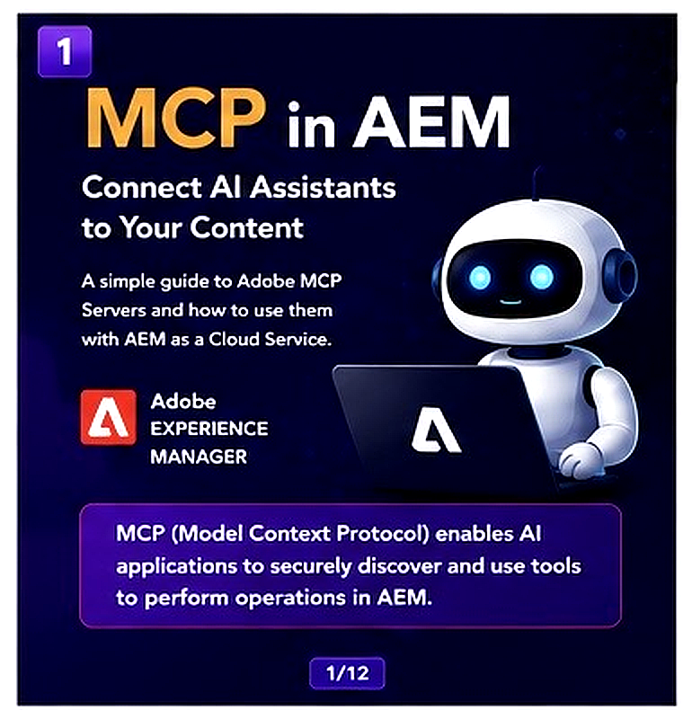

MCP (Model Context Protocol) is an open protocol that allows AI applications like Claude and Cursor to securely communicate with AEM as a Cloud Service.
Adobe provides hosted MCP servers that expose AEM capabilities such as: